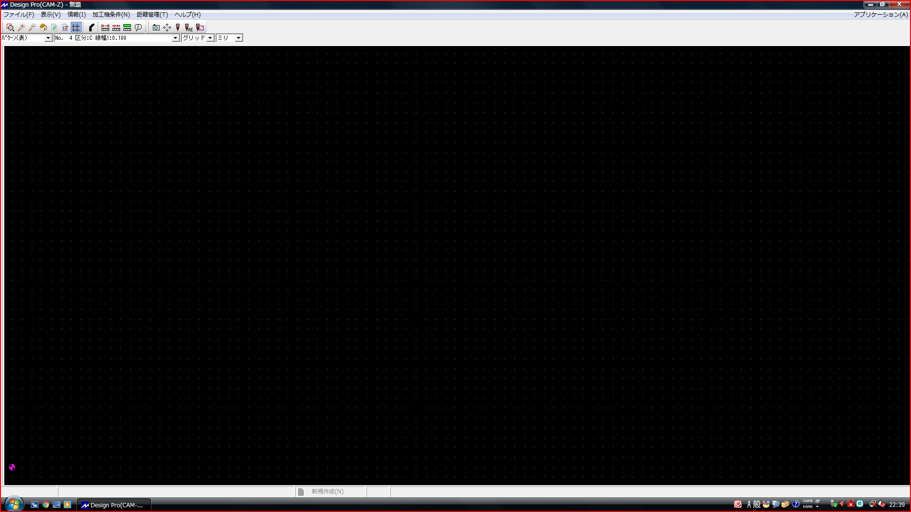

<<<<<<< HEAD
MIRS2405-REPT-0002 MIRS2405 技術調査書
=======
MIRS2405-REPT-0002 MIRS2405 開発完了報告書
>>>>>>> f27de44cea83df7cd7b440195f5003d9d35417c6
<<<<<<< HEAD

| 名称 |
MIRS2405 技術調査書 |
| 番号 |
MIRS2405-REPT-0002 |
| 版数 |
最終更新日 |
作成 |
承認 |
改訂記事 |
| A01 |
2025.2.17 |
仲谷天芽 |
|
初版 |
目次
本ドキュメントはMIRS2405 𝔊𝔘𝔏𝔏ℭの技術調査書である。
本技術調査書では基板加工機を修理し、使えるようになったため、その扱い方を示す。
基板加工機を扱う前の下準備、心構えを示す。
まず、この基板加工機は大変古いものである。そのため、想定以上に深く掘ってしまったり、ドリルに無茶な負荷がかかっていたとしても、我々が緊急停止スイッチを押さない限り停止はしてくれないと思ってほしい。
そして、この基板加工機の強制的な止め方は、以下の2通りである。
①PCから、Shift+Escを押す
②基板加工機本体の赤い緊急停止ボタンを押す
この方法を、少しでも異変を感じたら躊躇なく実行してほしい。
基板加工機を使用する前に、加工前の基板を基板加工機のねじ幅に沿って穴あけ加工を行う。
加工を行う際は、ボール盤の直径7.5ｍｍのドリルを普段使用している。
穴あけが終了したら、基板加工機にねじ止めを行う。この後気を付けてほしいのが、ねじ止めのない辺に養生テープを貼ることである。
この操作を行わないと、基板に歪みが生じてねじ止めした部分を中心が深く、高さに差が生じてしまう。一定の高さで加工を行う加工機では、加工幅に差が生じることとなるためである。
そして、過去の基板加工の削ったカスなどが、下敷き用の板と加工用の基板の間にあってもまた高さに差が生じてしまう。そのため、下敷きの上のカスをきれいに掃除しておく。
加工を行うための、基板の設定方法を示す。
手順を段落分けするとこのようになる。
1. PCを起動し、Design Proを起動する
2. easy cadで作成したgbrファイルをインポートする
3. easy cadで作成したdrlファイルをインポートする
4. 原点を示す
1. PCを起動し、Design Proを起動する
まず、PCを起動し"Kousaku"のアイコンをクリックする。
すると、このデスクトップ画面が表示される。

その中にあるDesign Proを起動する。
起動すると、CAMZが起動する。

そして、CAMZでは設計した基盤をインポートできないので、右上の”アプリケーション”からeasy cadを選択する。
以下の画面になっていればOKである。

2. easy cadで作成したgbrファイルをインポートする
次にgbrファイルをインポートする。
以下の写真の中にある、Ginと書かれたアイコンをクリックすることでgbrファイルをインポートする。

他にも左上の「ファイル→インポート→gbrファイル」を押し自分の加工データを選択することでインポートできる。
この時、想定よりも多くのファイルがあると思うがファイル名に「B_Cu」があるものは、輪郭裏加工。「edge_cuts」は外形線なのでこの二つを選べば大体うまくいく。
他にもファイルを開いたときに固まってしまうことがある。
その時は「Ctrl+Alt+Delete」か「Ctrl+Shift+Esc」からタスクマネージャを開き強制終了することをオススメする。
インポートすると、以下のように作成した回路が表示される。

3. easy cadで作成したdrlファイルをインポートする
次にdrlファイルをインポートする。
先述した写真の中にある、Dinと書かれたアイコンをクリックすることでdrlファイルをインポートする。
他にも左上の「ファイル→インポート→drlファイル」を押し自分の加工データを選択することでインポートできる。
ここでも、ファイルを開いたときに固まってしまうことがある。
その時は「Ctrl+Alt+Delete」か「Ctrl+Shift+Esc」からタスクマネージャを開き強制終了することをオススメする。
インポートがうまくいくと、以下のようなファイルが表示される。

4. 原点を示す
ツールバー上の「設定→原点を設定」から原点を決める。基本的に基板の左下に設定するのがセオリーである。ピンク色の丸が画面上に表示されていれば問題はない。
ここから先の操作は、少しの不注意で基板加工機を壊したり、操作者がけがをしてしまうことがある。本当に気を引き締めてほしい。
まずは、CAMZを開き上のツールバーから四方向に伸びた矢印アイコンの横にあるドリルのみのアイコンをクリック。加工リストを開く。
正しいアイコンを選択できていれば以下の画像のような画面になる。

この画面から今回行いたい加工を選ぶ。今回は輪郭加工を行うため、"輪郭加工(裏)"を選択。
その後、加工準備を行うためにセルフ操作を行う。左から二つ目の位置合わせを選択し、以下のような画面を開く。

ここから以下の３点の操作を行う。これらの操作はどの加工でも同じかつ必須なので順番も含めてぜひ覚えてほしい。
1,工具交換
2,高さの調整
3,原点教示
まず、工具の交換である。
工具の交換は、操作画面の工具交換をクリック。すると以下の画面が表示される。

工具は、基板加工機にも直接シールが貼ってあるが、右から順に1、2…10となっている。
役割として、わかりやすく書くと以下のとおりである。
1,輪郭加工用ドリル
2,小さい穴加工用ドリル
3,大きい穴加工用ドリル
10,ダミードリル
1,2,3は名前からわかると思う。10のダミードリルは何も刺さないドリルである。ここにはあえてドリルを装填しないようにしてほしい。
この基板加工機は、工具交換の時に工具を取り外せなかったり、工具をうまくつけれなかったりする。
例えば、「1のドリルをついた状態で、2のドリルに交換したい」という場合。1にドリルを戻し、2を装填という風に動くと
たまに1のドリルをうまく取り外せず、ドリルがついた状態で交換しようとして事故を起こしてしまうことがある。
そういったことを避けるため、工具を1に戻し10（ダミー）を装填。10（ダミー）を戻し2を装填。と動くことで事故を回避できる。
「ここに事故の回避方法を記した。」と先生に報告したため、事故を起こした場合は通常以上に先生に叱られるだろう。心して操作してほしい。
というわけで、輪郭加工をしたい場合は「返却ATC番号」に10を「新ATC番号」に1を入力してほしい。
次に、高さの調整である。
まず、ドリルが装填した状態で基板の上にドリルを移動させる。基板の上ならどこでもいいが、これから加工をしない位置に持っていくことをおススメする。
操作画面の右端真ん中あたりにある高さの調整ボタンをクリック。正しく選択できている場合以下のような画面になる。

この操作画面の下の「step距離」を調整する。この距離はドリル、基板によって違うので、毎回調整する必要がある。
この時も注意して行ってほしい。
まず、この基板加工機はどれだけ深く設定してもセーフティーというものが存在しない。つまり、どんな障害物があろうとその高さまで沈んで行ってしまう。
基板加工機の一番下の土台にたくさんの削られた跡があると思う。それは本来、あってはならない跡である。
輪郭加工の場合、ドリルの変更がなければ私はいつも高さ45.200㎜で行っている。
ここで1000mなどの大きすぎる値を入れても掘ろうとしてしまう。本当に注意してほしい。
45.200㎜で行ってはいるが、いきなり「step距離」に45.200㎜を入力するのではなく、徐々に下げて、基板と触れて、ドリルの音が変わったらストップという動きにしてほしい。
10㎜を入力して「z+」を4回クリック。1㎜を入力して「z+」を5回クリック。0.05㎜を入力して「z+」を基板と触れてドリルの音が高くなるまでクリック。
高さが当ったと感じたら「板厚に反映」をクリック。ドリルが戻ったらOKである。
この動きも「ここに事故の回避方法を記した。」と先生に報告したため、事故を起こした場合は通常以上に先生に叱られるだろう。心して操作してほしい。
最後に、原点を示す。
ここではこれと言って危険な要素はないが、注意してほしい点がある。
選択したもが「輪郭加工（裏）」ならPC画面上に示されている画面から左右対称（上下左右対称ではない）となる。
つまり、この手順書どおりに編集を行ったら「左下に原点を設定する」という操作を行っていると思うので、加工する基板上では右下にドリルを移動した後教示設定を行う
全ての操作を行った後に「工具交換した、高さ合わせた、原点示した」この三つを声出し確認した後、切粉を吸い取ってくれる吸引機の電源をオンにする。
手操作画面を閉じ続行を押して加工を始める。
再度警告するがこの時に変な動きをしたら躊躇なく「緊急停止ボタン」を押してほしい。基板加工機が壊れる程度で済めばいいが、想定できる最悪は指がなくなるかもしれない。
以下のことがあったら間違いなくおかしな挙動なので緊急停止を行うこと
・ドリルを装填したままドリル交換を行おうとした（原因：この基板加工機はポンコツなので、交換を支持してもうまく取り外せないことがある。今どのドリルを持っているか加工のたびに忘れてしまうから加工のたびに指示しよう）
・加工する基板の範囲外（養生テープなど）を加工しようとしている（原因：セーフティーがないので自分で止まったりできないし、移動範囲内にドリルの交換口があるため、そこに突撃することがある。）
・基板加工中に煙が出た(原因：吸引機の電源がオンになってない)
・加工中の基板の位置によって加工深さが違う（原因：下敷きとの間にゴミが入っている）
この加工は、最後の加工だが最も危険である。初めにその理由を示すと「工具交換を行うから」である。
この基板加工機はポンコツなので、工具交換の時に50%位の確率で工具を取り外せない。なので、工具交換の時は常に見張っておき、駄目だと思ったらすぐに緊急停止スイッチを押してほしい。
基板加工機は、小さい穴から順に加工し、穴の大きさによって工具を変えるので大体工具交換のタイミングはわかるので気を張って見張っててほしい。
ここからの操作は、輪郭加工と同じであるので輪郭加工を参照してほしい。
MIRS2405ドキュメント管理台帳へ